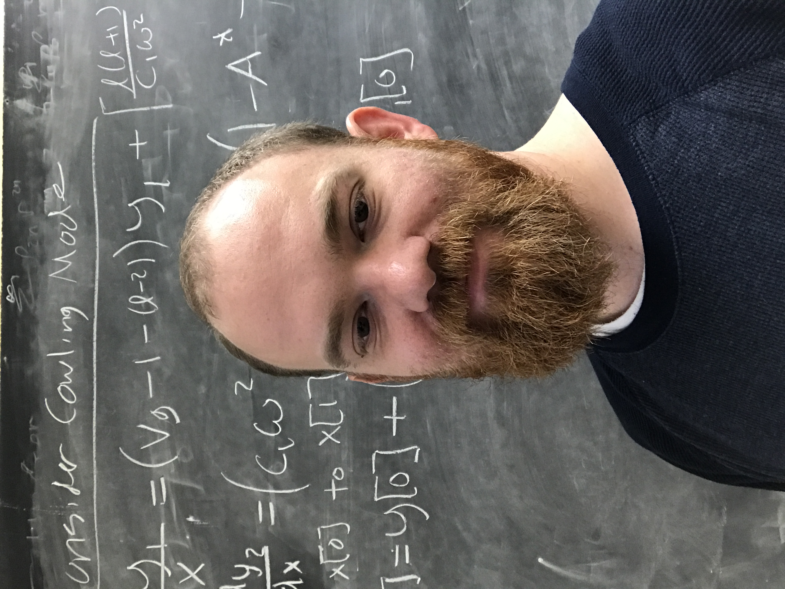

 |
I am a scientific software engineer at Oak Ridge National Laboratory (ORNL), for software at the Spallation Neutron Source. My PhD in Physics was earned from the University of North Carolina in April, 2022. My research focused in particular on computational models in relativistic white dwarf asteroseismology. I also attended the University of Georgia (MS Physics, 2015). My undergraduate degree in Mathematics is from Georgia College (2010). I am from Atlanta, GA, and live in Tennessee with my wife Nelly, our son Ezekiel, and our daughter Lily. In my spare time I study physics, read fiction, and play old school dungeons and dragons. |
| Github | rboston628 |
| ORCID | 0000-0001-8122-1961 |
| reece-boston | |
| Tutoring | click for info and prices |
| Contact Me | reece at the bostons |